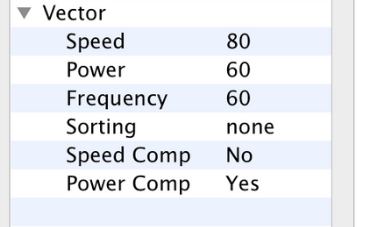
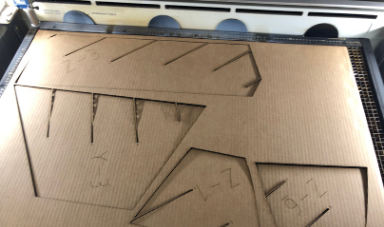

Slicer Big
Reslicing Model in Fusion Slicer
I started by retaking the heart I created last week and resliced it, but this time set the size for the height to be 27 inches. I then rotated the axes to fit well on the makerspace cardboard dimensions, and then exported the pages to illustrator to be nested.
I started by retaking the heart I created last week and resliced it, but this time set the size for the height to be 27 inches. I then rotated the axes to fit well on the makerspace cardboard dimensions, and then exported the pages to illustrator to be nested.
Imported Model
Setting Dimensions
Setting Slices per Axes
Sliced Model
Rotating Axes
Exporting Sliced Model
Nesting Models in Illustrator
I imported in the five pages from Fusion Slicer and repositioned the slices to save pieces of cardboard. I started with originally 5 pieces of cardboard exported from Fusion Slicer, and with proper manipulation I reduced it down to three. I then seperated the layers having the annotation and boundaries be on seperate layers for each page and then sent each layer to the laser cutter to cut.
I imported in the five pages from Fusion Slicer and repositioned the slices to save pieces of cardboard. I started with originally 5 pieces of cardboard exported from Fusion Slicer, and with proper manipulation I reduced it down to three. I then seperated the layers having the annotation and boundaries be on seperate layers for each page and then sent each layer to the laser cutter to cut.
Imported Page 1
Imported Page 2
Imported Page 3
Imported Page 4
Imported Page 5
Nested Page 1
Nested Page 2
Nested Page 3
Seperating Layers
Cutting and Assembling Project
Simmilar to last week I sent over each layer to the laser cutter to be cut cutting the boundary with the settings 80 60 60 and the annotations with the settings 100 20 20. I then assembled all the slices together making the final heart. I then measured the heart being 28 inches total to meet at least the minimum criteria for this weeks project.
Simmilar to last week I sent over each layer to the laser cutter to be cut cutting the boundary with the settings 80 60 60 and the annotations with the settings 100 20 20. I then assembled all the slices together making the final heart. I then measured the heart being 28 inches total to meet at least the minimum criteria for this weeks project.

Boundary Cut Settings
Annotation Cut Settings
Imported Design in Epilog
Loading File to Laser Cutter
 Cutting Boundary Layer
Cutting Boundary Layer
Finished Cut Boundary Layer

Finished Cut Slices with Annotations
Measured Project at 28 inches
Completed Big Slicer Project